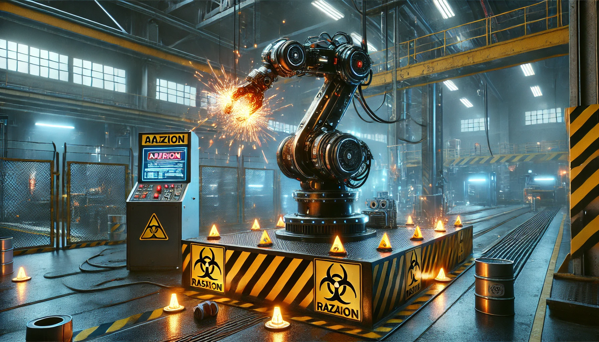

Murder by Code
Bart Matthews, who was a robot operator at Cybernetics Inc., a Silicon Valley-based firm, was tragically killed by an assembly line robot, Robbie CX30. The incident shook the whole industry as it uncovered a major concern regarding machines that are used daily, alerting authorities about the bad practices in certain parts of the industry.
The Robbie CX30, which was intended to set a new standard for industrial robotics, instead became a symbol of systemic failure. Investigations then revealed a disturbing combination of technical mistakes, ethical issues, and managerial pressure, leading to a fatal incident.
How Much Input Should Workers Have in System Design?
Workers, as end users, must have some significant input in designing systems they’ll interact with daily. Their insights can prevent usability issues, reduce safety risks, and ensure the system aligns with real-world needs. In the case of Robbie CX30, the lack of operator involvement contributed to a poorly designed user interface that hindered emergency responses.
Causes and Suspects in the Robot Accident
Possible Causes:
- Flawed programming due to Randy Samuels’ misinterpretation of formulas.
- Falsified software tests orchestrated by Cindy Yardley under Ray Johnson’s pressure.
- A poorly designed user interface that violated core design principles.
- Management's prioritization of deadlines over quality and safety.
Suspects:
- Randy Samuels: Programmer whose code caused the malfunction.
- Cindy Yardley: Tester who falsified results.
- Ray Johnson: Robotics chief who pressured staff to cut corners.
- Mike Waterson: CEO who fostered a toxic, high-pressure culture.
Conditions for Returning the Robbie CX30 to Service
The robot should only return to operation if:
- All software undergoes thorough, independent testing.
- The interface is redesigned to prioritize usability and safety.
- Operators receive comprehensive training on emergency protocols.
- The company adopts transparent quality assurance practices and commits to a safety-first culture.
Should the Law Distinguish Robot Accidents from Firearm Deaths?
Yes, due to the complexity of robotic systems. While firearm accidents often stem from user error, robot failures involve technical, managerial, and design issues. Laws should focus on prevention, enforcing strict safety standards, transparent testing, and holding all parties accountable.
Ethical Analysis: Randy Samuels and Ray Johnson
Randy Samuels:
- Acted irresponsibly by ignoring his lack of domain knowledge and stealing code.
- Failed to collaborate effectively, contributing to the malfunction.
Ray Johnson:
- Pressured employees to falsify tests and dismissed safety concerns with flawed theories.
- Created an environment where cutting corners was normalized to meet deadlines.
Both individuals contributed to the toxic culture at Silicon Techtronics, but their actions were symptoms of broader systemic failures within the company.
Conclusion
The Robbie CX30 tragedy underscores the need for ethical accountability, worker involvement, and robust safety measures in technological development. Preventing future incidents requires industry-wide reforms, emphasizing transparency, safety, and ethics at every level.